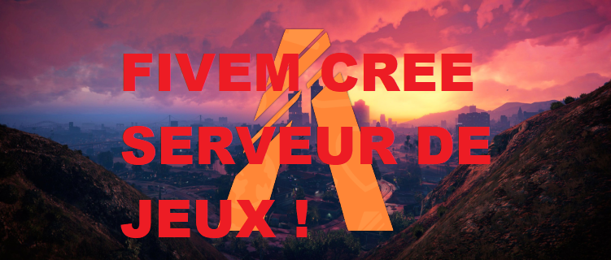
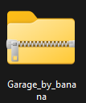
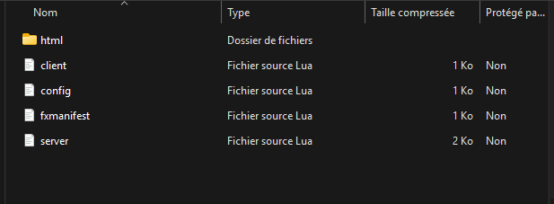

FiveM, c'est une plateforme qui permet de jouer à Grand Theft Auto V sur des serveurs
multijoueurs personnalisés, différents du mode en ligne officiel.

Les scripts sont des programmes qui ajoutent des fonctionnalités au serveur.
Quelques exemples :
Script de police : permet d'arrêter des joueurs, mettre des amendes, etc.
Script de banque : permet de déposer ou retirer de l'argent.
Script d'inventaire : ajoute des objets que les joueurs peuvent transporter.
Script de métier : permet de travailler comme chauffeur, médecin, taxi, etc.
Script de véhicule : ajoute de nouvelles voitures ou des options spéciales.
Mon tout premier script était un Garage. Dans GTA RP, nous avons besoin de ranger nos véhicules.
Dans un grand nombre de serveurs, les garages sont à plusieurs endroits et sont appelés garage public.
C'est garage public permet de ranger nos véhicules à un endroit et de les reprendre à un autre.

Dedans il y avais plusieur dossier est tous nous permetter de les placer a des endroit et de les sortir a un autre
Ce script n'a jamais été fini car avant je ne codé pas vraiment encore. Ce script a été généré par IA, bien sûr je l'ai modifié à 100%.
Le problème est que en fait la page du garage était tout le temps ouverte alors qu'il fallait appuyer sur un bouton.
Comme je ne codais pas encore, je n'ai jamais réussi à continuer ce script, je l'ai donc laissé à l'abandon.